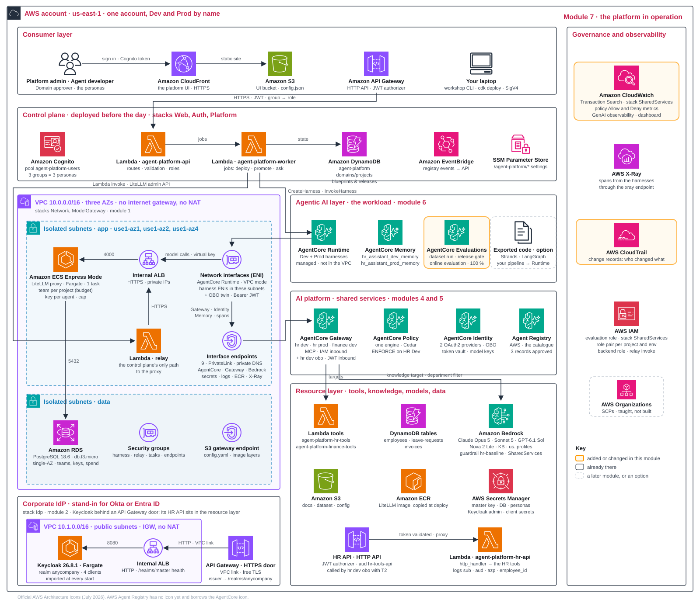

Seeing the platform run Explain · 10 min
The dashboard combines four evidence sources:
- AgentCore metrics: invocations, errors and latency.
- Policy decisions: allowed and denied tool calls.
- Online evaluation: quality scores.
- Model-gateway spend logs: spend per key, read through the gateway's API rather than from CloudWatch.
Five decisions Design · 10 min
7.1What do we watch, and from where?
| Option | Pros | Cons | Choose when |
|---|---|---|---|
| Transaction Search and GenAI observability | native; a trace per request, grouped by session, kept per endpoint | an account-level setting; trace ingestion is billed | AWS-native operations |
| CloudWatch Omni, the agent-aware front end over the same CloudWatch data | traces, sessions, quality scores and plain-language queries in one place; nothing to re-instrument | one space per account and Region; its own access model to learn | operators want sessions, traces and scores in one investigation |
| Export to a third-party observability backend | one tool for everything | export plumbing | an existing APM |
| Logs only | nothing to set up | no traces | never for Prod |
This workshop. Transaction Search is enabled by the foundation. Overview reads the first three sources as CloudWatch metrics and the fourth from the model gateway's spend logs through its API; nothing on it comes from CloudWatch Logs. Open CloudWatch for a conversation's traces.
CloudWatch Omni is another front end over the same data. It is listed as an option, but not set up today.
For changes, read two audit records:
- Platform releases: who created, submitted, approved and promoted.
- CloudTrail: which AWS API changed a resource, under which identity.
A trace ID correlates requests; it does not identify the user. Sampled traces miss some usage, so spend comes from model-gateway logs that see every call.
Production path. Alarm on errors, latency, budget burn and quality. Give every alarm a notification target and no-data rule. A heartbeat distinguishes idle traffic from a broken pipeline.
7.2How is quality watched in Prod?
| Option | Pros | Cons | Choose when |
|---|---|---|---|
| Online evaluation: a sampling rate, evaluators, a quiet timeout | continuous | judge cost; results minutes later | always |
| Periodic batch over real traces | cheaper | lag | low traffic |
| User feedback only | free | sparse and biased | never alone |
This workshop. Promotion registers three online settings:
- Sampling: 100% of Prod conversations.
- Judges: Helpfulness, Harmfulness and ToolSelectionAccuracy. AgentCore names its built-in judges with a
Builtin.prefix, soworkshop apply 7echoes the registered configuration asBuiltin.ToolSelectionAccuracyand CloudWatch uses that as the metric name;workshop scoresand the Overview drop the prefix. - Quiet timeout: one minute; scores arrive about 8–11 minutes after traffic.
Feedback is tied to sessions. Rollback means putting the previous configuration back in Prod. Today that is a new release of the previous blueprint version through the same gate, approval and promotion; the UI has no rollback button yet.
Production path. Roll back on quality regression and turn user feedback into new dataset tests.
7.3What may telemetry keep, and who may read it?
| Option | Pros | Cons | Choose when |
|---|---|---|---|
| Full content: prompts, answers and tool arguments in every trace | the richest debugging and evaluation detail | personal data lands in the trace store; every reader sees everything; retention becomes a data decision | synthetic data; Dev; a workshop |
| Metadata only: ids, timings, token counts, tool names | safe by default; cheap | a wrong answer cannot be read back; judge-based evaluators need content | production by default, until a data owner approves more |
| Redact at capture: content kept, named fields removed before export | debugging detail without the names | redaction rules to maintain; collector filters and log masking are extra layers, not substitutes | production, with a data owner's approval |
This workshop. Full traces use synthetic HR data. CloudWatch IAM permissions control trace access, independently of platform personas. Online judges read the same stored content.
Production path. Start with metadata only. Keep redacted content when the data owner approves it; judge-based evaluation needs content. Define readers and retention per source. Tenant trace access is a data boundary.
Filtering and redaction happen at different points:
- Before export: ADOT's
AWS_REDACT_SPAN_ATTRIBUTESnames attributes to blank. - After storage: reader filters select rows; they do not redact fields.
AWS_GENAI_CONTENT_EXTRACTION_OPT_OUT=true still keeps prompts and answers on spans. It is not a privacy opt-out.
7.4How is shared cost allocated?
| Option | Pros | Cons | Choose when |
|---|---|---|---|
| Measured consumption: every call priced and charged to the key that made it | allocation follows use | needs complete, non-overlapping metering and a pricing basis; the foundation stays unallocated | metering exists, as here through the model gateway |
| Usage-based share: shared cost split by a proxy such as request count | repeatable when direct attribution is missing | a request count under-charges large or slow requests | shared services without per-call metering |
| Platform-funded pool: the foundation paid centrally; teams see only their direct spend | simple for teams | unit costs hide the shared spend; nobody feels the platform's bill | a first platform, few workloads |
This workshop. Costs have two categories:
- Model calls: measured per key, identifying agent, environment and model.
- Shared services: network, gateways, registry and proxy are platform-funded; the Keycloak stand-in from module 2 is unallocated too, though in production the company's identity provider is its own cost centre, not the platform's.
The rough fixed-cost estimate is 0.28 USD/hour: proxy/database ~0.10 plus nine interface endpoints ~0.18. The corporate IdP from module 2 adds about 0.08 USD/hour (one Fargate task and an internal load balancer; its two HTTP APIs cost almost nothing at this traffic), about 0.36 USD/hour in total while everything is deployed. This is not the full platform bill. Endpoints are billed per AZ-hour, including idle time. For HR, use key spend ÷ answered conversations; failed and retried calls remain in spend.
Production path. Make cost accounting explicit:
- Allocation: document the shared-cost rule and revisit it as traffic and tenants change.
- Evidence: activate billing tags; trace attributes are not billing tags. Reconcile gateway estimates with Cost Explorer or CUR.
- Control: AWS Budgets sends delayed alerts; gateway caps block calls. Read unit cost alongside quality.
7.5Recap: what changes for production
Turn the recap into your production backlog: one action and owner per row. Use your design record's my_call decisions to choose those actions.
| Workshop choice | Production action | Module |
|---|---|---|
| One account; scoped names | Platform/workload accounts; SCPs | 1 |
| Private endpoints; single-AZ database | Multi-AZ, scoped endpoint policies, UI/API WAF | 1 |
| Shared team builds platform; project team builds agent | Name build, release, on-call and escalation owners | 1 |
| Local Cognito users for the platform; self-hosted Keycloak for employees | Brokered corporate IdP for the platform; Okta or Entra ID as the employees' issuer; MFA | 2 |
| Agent service identity for Dev and Prod; on-behalf-of demonstrated in modules 2, 4 and 6 with Keycloak | On-behalf-of wherever user identity matters; Okta or Entra ID as issuer; row-level security in the tools | 2 |
| Account-root trust; empty tool list allows all | Tighten templates | 3 |
| One approver group | Domain-bound approvers; two for Prod | 3 |
| One IAM registry; all personas read | Organization IAM registry + RAM; separate JWT registry or mediated IDE view | 3 |
| Gateway per project and environment | Add shared and domain gateways | 4 |
| Tools behind gateways | Specialist agents as targets; identity per hop | 4 |
| Lambda tools; pinned KB filter; the HR API as an OpenAPI target with token exchange, tool logic unchanged | OAuth targets for every tool that needs the person; row-level security in the tools; user-scoped retrieval | 4 |
| Shared engine; handwritten policies | Domain engines; reviewed policy changes | 4 |
| No VPC Lattice target endpoints | Private VPC targets; account-quota review. Agent-to-gateway PrivateLink already exists | 4 |
| One model gateway; master key | Per-environment gateways; scoped admin key; early cap alerts | 5 |
| Catalogue approval label | Approved-reference deployment gate | 5 |
us. profiles; no workshop SCP | Data-class processing rules; SCP profile exceptions | 5 |
| Harness configuration | Containers where needed; MCP servers on Runtime | 6 |
| Self-reported scores from the command, platform-run evaluation from the Releases screen; team thresholds | Platform-run evaluation only; minimum floors; evidence-bound approval | 6 |
| UI-triggered worker | Git pipeline calling platform API | 6 |
| No alarms; rollback by re-releasing the previous version | Alarms and automatic rollback | 7 |
| Full traces; CloudWatch IAM readers | Metadata by default; approved redaction; readers/retention per source | 7 |
| Per-key spend; shared costs unallocated | Successful-outcome unit cost; shared-cost rule | 7 |
| Destroyable resources; no backups | RETAIN and point-in-time recovery | all |
This workshop. Defaults keep the day manageable. Repository tests check that resources are destroyable for cleanup. Production needs deliberate retention and recovery choices.
Your design record, module 7
module_7:
inputs: # read by: workshop apply 7
prod_traffic: 10 # conversations sent to Prod
decisions:
observability: {workshop: transaction-search, my_call: "..."}
prod_quality: {workshop: online-eval-100pct, my_call: "..."}
telemetry_content: {workshop: full-content, my_call: "..."} # synthetic data; CloudWatch IAM controls trace access
cost_allocation: {workshop: measured-consumption, my_call: "..."} # per key; the foundation unallocated
backlog: # your production path: one line per recap row, with an owner
- "accounts: platform + workload, owner: cloud team"
- "identity: brokered Entra ID, owner: IAM team"
- "..."Hands-on 20 min
- command
workshop apply 7. It needs the Prod agent that module 6's promotion created: without an approved and promoted release it stops with no Prod agent yet. It first prints the online evaluation that promotion registered (status, sampling, quiet timeout, evaluator ids), then sends ten Prod conversations by default (prod_trafficin your record, a whole number from 1 to 50), three at a time with one line per conversation, and reportsOK 10 of 10 conversations answered. It then waits, up to three minutes, for those invocations to show in the Prod metrics and prints invocations, errors, sessions and latency, the policy allow and deny counts, and the team's spend by environment. It posts one thumbs-up for the first answered conversation (POST /feedback), reads the long-term memory records of employee E1001, the sample conversationworkshop apply 6wrote into the Dev memory, and ends with the online scores so far (or none yet:workshop scoresshows them when they arrive) and two links, Overview and CloudWatch GenAI observability. The step usually takes about a minute (ten conversations were answered in 31 s on warm sessions); a cold session takes 25 to 40 s and the metrics check can wait up to three minutes, so allow up to five. - screenOverview, with Prod selected: read invocation counts, error rate and latency, spend by environment, policy Allow/Deny counts, the online scores so far and the feedback counts; the thumbs-up apply 7 posted is already there.
- screenCalculate Prod key spend ÷ Prod conversations answered. The apply output counts only the conversations it just sent (ten by default). The Prod key has also paid for module 6's seeded traffic (the answered count
workshop traffic --prod 3printed, normally three) and for any Prod question you asked after promotion in Playground · Prod or withworkshop ask --env prod, so add those to the denominator. Failed calls add spend, not successful outcomes. - screenCloudWatch · GenAI observability: follow one Prod trace step by step.
- command
workshop scores: read the online scores. The three conversations module 6 seeded withworkshop traffic --prod 3should already be scored; today's ten arrive 8 to 11 minutes after each session goes quiet. The command lists the mean and the sample count per evaluator over the last three hours, then the platform's own view of the same numbers; the Overview shows them too.workshop traffic --prod 3sends more conversations whenever you want fresh scores. - recordFill
design-record.yaml's backlog: one production action and owner per recap row.
Read more: production readiness; CloudWatch Omni; CloudTrail; billing tags.
The platform after module 7
No new workload is built. Four sources now show its behaviour, policy decisions, quality and spend. Release records and CloudTrail support change investigations.

hr dev obo gateway with its OpenAPI target and the Dev on-behalf-of twin. The corporate IdP they rely on, Keycloak on Fargate behind an internal load balancer and an API Gateway HTTP API, with the HR API and its JWT authorizer in front of the Lambda agent-platform-hr-api, sits at the bottom of the figure: Keycloak and its load balancer in a small public VPC of their own (10.1.0.0/16) behind the API Gateway door; the HR API and its Lambda, which belong to no VPC, in the resource layer. Click to open full size.Glossary
- Trace, span
- A trace records one request (one turn); spans record its individual steps.
- Session
- One conversation under one session id, kept until you start a new session in the Playground or pass a new one to
workshop ask --session; each turn of it is a trace. - Transaction Search
- CloudWatch search over spans, including agent conversations.
- Online evaluation
- Quality scoring over real agent traffic.
- Sampling
- The fraction of conversations recorded or evaluated.
- Quiet timeout
- Idle interval used to decide that a conversation has ended.
- Feedback
- A rating and comment tied to a session.
- Rollback
- Promote the previous blueprint version again; Prod's
DEFAULTendpoint follows the new harness version. - Audit trail
- Release records identify platform changes; CloudTrail records AWS API activity. Event history keeps 90 days of management events; data events require configuration. These are not prompt records.
- Redaction
- Remove sensitive fields before telemetry is stored or exported.
- Retention
- How long telemetry is kept.
- Unit cost
- Spend divided by successful business outcomes. Failed attempts remain in the spend.
- Cost allocation
- Assign direct and shared costs to the teams that use the platform.
- Hardening
- Replace workshop shortcuts with production settings.